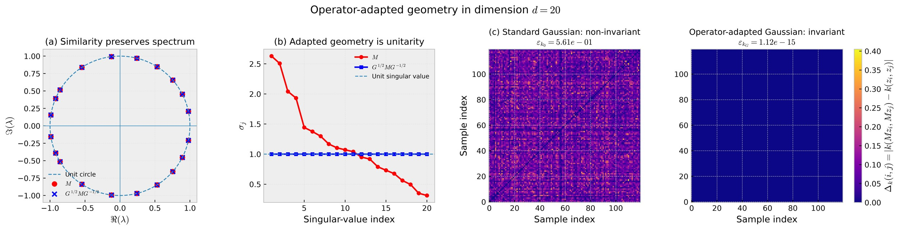

The obstacle
Euclidean distortion
A matrix may have all eigenvalues on the unit circle and still stretch some vectors in the usual Euclidean norm. Spectral location alone does not guarantee isometry.
What if the operator is fixed, but the geometry is ours to design? An exact existence and classification theory for Hilbert-space geometries in which a prescribed linear operator becomes norm preserving.
Choose a geometry first, then ask whether an operator respects it.
Fix the operator first, then construct a compatible RKHS geometry.
Representation learning often changes the features or the model. This work asks a different inverse question: for a given linear transformation, can we choose the inner product so the transformation preserves every represented function's norm?
A matrix may have all eigenvalues on the unit circle and still stretch some vectors in the usual Euclidean norm. Spectral location alone does not guarantee isometry.
Choose a Hermitian matrix \(G\succ0\) to define the inner product. The operator is preserved exactly when \(M^*GM=G\).
Every admissible \(G\) determines a reproducing kernel. We can characterize not only whether one exists, but the entire compatible family.
Let \(V=\mathrm{span}\{\psi_1,\ldots,\psi_m\}\) be a finite-dimensional function space, \(f_c(x)=\Psi(x)^*c\), and let \(T f_c=f_{Mc}\). An RKHS geometry is encoded by a Hermitian positive-definite matrix \(G\).
There exists \(G\succ0\) satisfying this equation if and only if \(M\) is diagonalizable and every eigenvalue lies on the complex unit circle. Equivalently, \(M\) is similar to a unitary matrix.
Unit-modulus eigenvalues alone are insufficient. A nontrivial Jordan block prevents any positive-definite solution of \(M^*GM=G\). Exact geometric preservation requires the right spectral structure and diagonalizability.
Fixed operator matrix \(M\).
Diagonalizable? Eigenvalues on \(\mathbb T\)?
Find all positive-definite \(G\) satisfying \(M^*GM=G\).
Obtain the kernel \(k_G\) and an isometric RKHS.
Theorem 2.4 and Corollaries 2.5–2.6 describe every compatible metric and kernel. Repeated eigenvalues create additional degrees of freedom inside their eigenspaces.
Suppose \(M=SDS^{-1}\), with distinct eigenvalues \(\mu_1,\ldots,\mu_r\) of multiplicities \(m_1,\ldots,m_r\), all of modulus one. Then every invariant metric is of the form
The complete family of reproducing kernels is therefore
Its real parameter-space dimension is
If every eigenvalue is distinct, each \(H_j\) is a positive scalar. The invariant family has \(m\) real degrees of freedom.
An eigenspace of multiplicity \(m_j\) admits an \(m_j\times m_j\) Hermitian positive-definite block, contributing \(m_j^2\) real parameters.
The manuscript's 20-dimensional example begins with a matrix similar to a unitary operator but not unitary in Euclidean geometry. An adapted metric restores isometry without changing the eigenvalues.
Non-Euclidean adapted linear operator example.
Normalized pairwise kernel invariance discrepancy.
Reported near-machine-precision invariance.

Figure 1, accepted manuscript. Spectrum and singular-value comparison, followed by pairwise Gaussian-kernel invariance-error visualizations. The image is extracted from the supplied paper; numerical values are those reported in the manuscript.
Euclidean distance is generally not preserved by the chosen non-orthogonal transformation.
If \(M^*GM=G\), then \(k_G(Mx,My)=k_G(x,y)\). The paper uses bandwidth \(\gamma=3\) and 120 sampled representations.
This self-contained 2D illustration shows exactly how an adapted positive-definite metric converts a non-orthogonal similarity transform of a rotation into an isometry. It is not a reproduction of the paper's 20D numerical experiment.
Construct \(S=\begin{bmatrix}1&s\\0&1\end{bmatrix}\), \(M=S R_\theta S^{-1}\), and \(G=S^{-T}S^{-1}\). This guarantees \(M^TGM=G\) for every slider setting.
Dashed outlines show the image of each unit curve under \(M\). The Euclidean circle generally changes shape, while the \(G\)-unit ellipse maps onto itself.
Norm preservation is exact because the metric is constructed from the similarity transform. The Euclidean matrix need not be orthogonal.
Consequently, every Gaussian kernel using this invariant quadratic form preserves pairwise similarity under the transformation.
The mathematical statements and reported numerical values on this site are taken from the accepted manuscript. The interactive illustration is a separate, analytically exact teaching example.
Himanshu Singh · NeurIPS 2026 GlobalSouthAI
Open paper PDF ↗Explore the code, experiment settings, and related research artifacts in the linked repository. The site's browser demo does not require a Python environment.
Visit GitHub ↗The existence and classification results concern finite-dimensional function spaces. The paper identifies extension to infinite-dimensional RKHSs, including bounded positive invertible metric operators, as a separate research direction. The 2D web demonstration is not an additional empirical result.
Singh, H. (2026). Operator-Adapted Reproducing Kernel Geometries for Structure-Preserving Representation Learning. NeurIPS 2026 GlobalSouthAI. Verify the final proceedings metadata and URL before using a formal BibTeX entry.